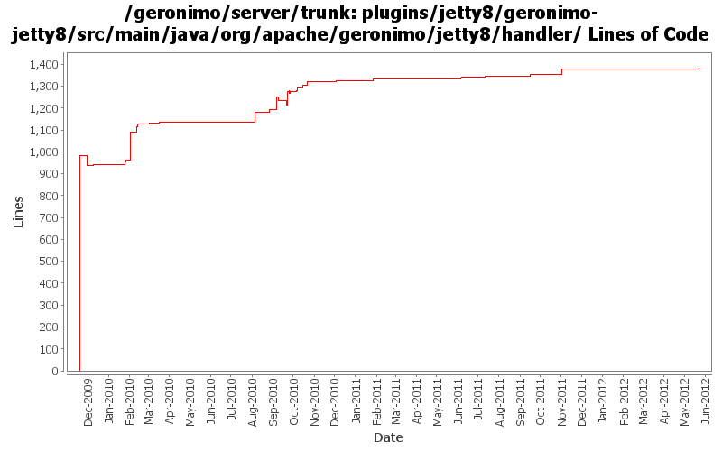

[root]/plugins/jetty8/geronimo-jetty8/src/main/java/org/apache/geronimo/jetty8/handler

| Author | Changes | Lines of Code | Lines per Change |
|---|---|---|---|
| Totals | 65 (100.0%) | 1757 (100.0%) | 27.0 |
| djencks | 39 (60.0%) | 1390 (79.1%) | 35.6 |
| gawor | 13 (20.0%) | 253 (14.4%) | 19.4 |
| xuhaihong | 9 (13.8%) | 92 (5.2%) | 10.2 |
| rickmcguire | 2 (3.1%) | 12 (0.7%) | 6.0 |
| dblevins | 2 (3.1%) | 10 (0.6%) | 5.0 |
Merge changes from GERONIMO-6341 orm.xml does not take effect in latest Geronimo 3.0 beta branch.
7 lines of code changed in 1 file:
GERONIMO-6204 Decouple OpenWebBeans from web container
54 lines of code changed in 2 files:
GERONIMO-6145 Factory info should not be shared among those web jsf applications in one EAR package
11 lines of code changed in 2 files:
GERONIMO-5050 Continue integrating use of openejb owb integration
1 lines of code changed in 1 file:
GERONIMO-5050 Use more explicit initialization of owb rather than relying on properties. Start integrating the needed changes
6 lines of code changed in 1 file:
GERONIMO-5993 MyFaces WebApplicationContext might not work if multiple JSF web applications in the same EAR package
Now, the name of web module will be used as the key.
7 lines of code changed in 1 file:
a. Update the WebAttributeNames in the geronimo-web module to WebApplicationConstants
b. Update the WebApplicationConstants in the geronimo-wab module to WABApplicationConstants
8 lines of code changed in 1 file:
use unwrapped bundle for osgi-bundlecontext attribute
5 lines of code changed in 1 file:
GERONIMO-5788: Expose BundleContext in ServletContext under Spring-named attribute
8 lines of code changed in 1 file:
Related changes for OWB-503: Reduce static synchronized hashmap usage
For Geronimo this means mostly not passing around a HashMap as context, but instead the new WebBeansContext object
10 lines of code changed in 2 files:
GERONIMO-5050 use single owb lifecycle and context in jetty, fix a couple small problems
5 lines of code changed in 2 files:
Set the default JSPFactory in the test cases
2 lines of code changed in 1 file:
GERONIMO-5050 mostly a thread/module based singleton scheme for OWB, and a bunch of other tweaks
24 lines of code changed in 2 files:
GERONIMO-5646 if jetty doesn't start a web app, don't start the gbean for it either
10 lines of code changed in 1 file:
GERONIMO-5508 implement ServletContainerInitializer support for jetty similar to tomcat
15 lines of code changed in 2 files:
GERONIMO-5508 support accessing resources from jar files
4 lines of code changed in 1 file:
GERONIMO-5624 fix up dynamic security constraint processing for jetty
12 lines of code changed in 1 file:
GERONIMO-5624 For jetty, overide jetty internal methods (that I just added) instead of wrapping the ServletContext.Dynamic
68 lines of code changed in 3 files:
Add missing svn properies
3 lines of code changed in 1 file:
GERONIMO-5624 patch (slightly modified) from Ivan to use info tree to merge security info from dynamic additions and annotations (this is new for jetty).
105 lines of code changed in 3 files:
Jetty now allows configuration of not restricting adding event listeners
2 lines of code changed in 1 file:
GERONIMO-5567 clean up unused classes and code
2 lines of code changed in 3 files:
GERONIMO-5567 rewrite jetty integration to use a openejb-like info tree and the *Registration interfaces. This gets everything started in the right order and is a lot simpler. Old code still needs to be removed
61 lines of code changed in 1 file:
remove debugging code commited by accident
0 lines of code changed in 1 file:
GERONIMO-5227 Add ValidatorFactory to servlet context for JSF usage.
12 lines of code changed in 1 file:
GERONIMO-5506 Make servlet context createFoo methods use our object creation, and use the createFoo methods for filters and servlets. Listeners are yet to be created this way.
49 lines of code changed in 2 files:
XBEAN-148 use new xbean-bundleutils
1 lines of code changed in 1 file:
GERONIMO-5030: Fragment bundles must also be considered when looking up resources
3 lines of code changed in 1 file:
GERONIMO-5030: Make sure ServletContext is registered in service registry after the web app context is fully initialized - take 2. Register gbean with lowest priority so that it starts last and causes the ServletContext to be registered
14 lines of code changed in 1 file:
revert most of 918095. it's causing some other problems with filters.
3 lines of code changed in 1 file:
GERONIMO-5030: Make sure ServletContext is registered in service registry after the web app context is fully initialized. That is, start web app context after all dependent servlet gbeans are started
9 lines of code changed in 1 file:
GERONIMO-4995, GERONIMO-5030: Make sure we are not serving files from OSGI-INF or OSGI-OPT directories
14 lines of code changed in 1 file:
GERONIMO-4989: Improve Jetty's ServletContext.getResource/getResourcePaths support. Welcome pages should work now.
42 lines of code changed in 2 files:
GERONIMO-4989: Support ServletContext.getResourcePaths() in Jetty. Also, minor improvements in Tomcats implementation of the same
132 lines of code changed in 2 files:
help prevent NPE in java.util.zip.Inflater on Jetty
9 lines of code changed in 1 file:
GERONIMO-5030: Register ServletContext into service registry as mandated by OSGi Web Applications specification
14 lines of code changed in 1 file:
fix compilation erros against latest jetty source
11 lines of code changed in 1 file:
GERONIMO-4965 Get pluto 2 running as osgi blueprint service. Base console sort of works. Fix a bug in jetty single-bundle-ear support for locating resources
7 lines of code changed in 1 file:
GERONIMO-4976 make bundle context available through servlet context
1 lines of code changed in 1 file:
GERONIMO-4964 base jetty ServletContext.getResource on bundle.getEntry
24 lines of code changed in 2 files:
(1 more)